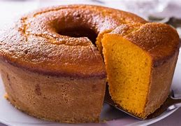

Bolo de Cenoura

Ingredientes
- 3 cenouras médias picadas
- 4 ovos
- 1 xícara de óleo
- 2 xícaras de açúcar
- 2 e 1/2 xícaras de farinha de trigo
- 1 colher de sopa de fermento em pó
Modo de Preparo
- Bata no liquidificador a cenoura, ovos e óleo até obter um creme homogêneo.
- Despeje em uma tigela, adicione o açúcar e misture bem.
- Acrescente a farinha aos poucos, mexendo até incorporar.
- Adicione o fermento e misture levemente.
- Despeje a massa em uma forma untada e enfarinhada.
- Leve ao forno pré-aquecido a 180°C por cerca de 40 minutos.
Cobertura (opcional)
- 1 colher de sopa de manteiga
- 3 colheres de sopa de chocolate em pó
- 1 xícara de açúcar
- 5 colheres de sopa de leite
- Leve tudo ao fogo e mexa até engrossar. Espalhe sobre o bolo ainda quente.